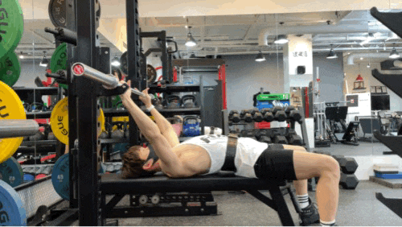

벤치프레스

준비
벤치에 누웠을 때 수직선상으로 눈위에 바벨이 위치도록 합니다.허리는 지면에서 살짝 떨어지도록 눕습니다.
바 들어올리기
바벨을 들어올려 가슴 아래쪽 부분에 위치하도록 합니다.이때 날개뼈를 아래로 당겨 견고하게 고정시킵니다.
바 내리기
바벨을 내리기 전 복부에 힘을 주어 상체가 움직이지 않도록 하고,가슴아래쪽으로 온전히 내렸다가 밀어올립니다.
랫풀다운

준비
앉아서 등을 펴면서 상체가 엉덩이보다 살짝 뒤쪽으로 이동되는포지션에서 랫풀다운을 해주어야 자극 전달이 잘되므로 등을핍니다.
올바른 팔꿈치 각도
수직으로 팔꿈치를 내리며 약간 사선으로 내려지는 경우에도팜꿈치 각도와 줄의 각도가 일치하면 됩니다.
견갑골의 하방회전
팔을 내릴 때 견갑골이 끝까지 하방회전이 이뤄져야 하며흉추신전/복압/팔꿈치각도가 모두 선행되어야 합니다.
바벨로우

준비
양발 간격은 어깨 너비와 골반 폭 사이로 해줍니다.허리는 곧게 펴주고 그 상태에서 앞으로 숙인 후 바벨을 잡습니다.
기본자세
숨을 들이마시면서 바벨을 살짝 들어 준비합니다.상체의 각도는 45도 이하로 합니다.
바벨의 위치
숨을 내쉬면서 바벨을 들어 배나 명치 쪽에 닿게 합니다.팔꿈치를 당겨준다는 느낌이 들어야 합니다.